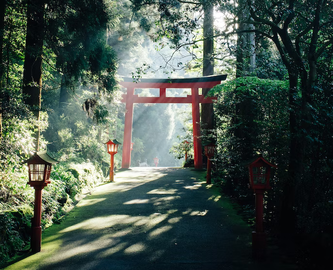

Torii Gate
One of Japan's most famous symbols, Torii gates mark the transition from the mundane to the sacred.
Learn moreTorii Gate
One of Japan's most famous symbols, Torii gates mark the transition from the mundane to the sacred.
Learn moreTorii Gate
One of Japan's most famous symbols, Torii gates mark the transition from the mundane to the sacred.
Learn more